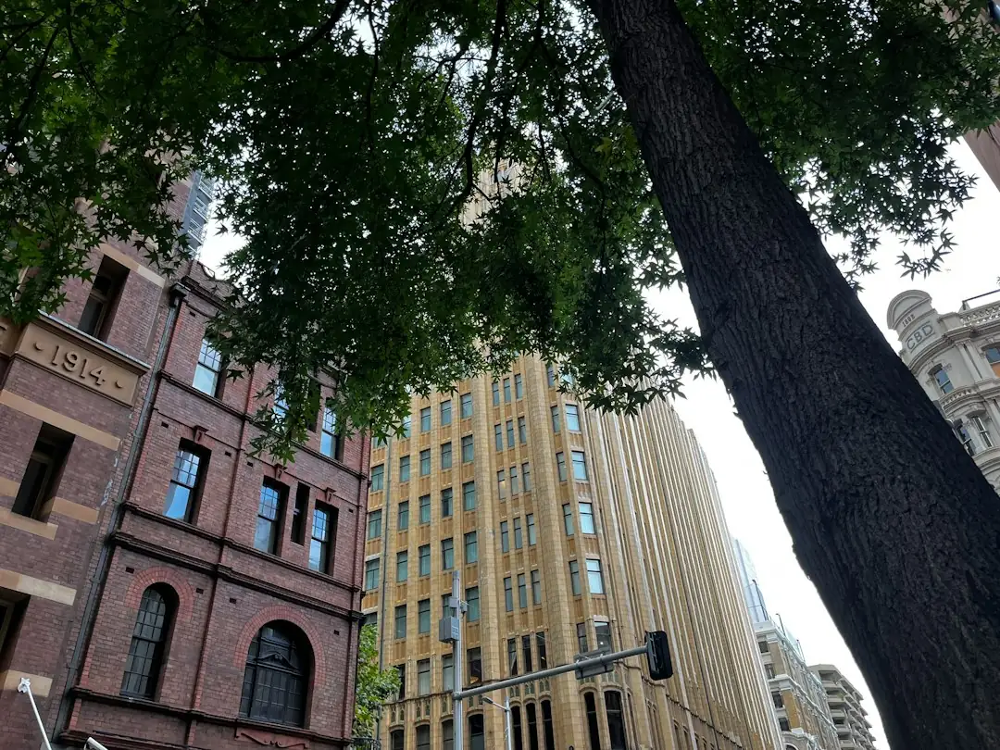

For Sydney tree work in 2026, the published price guide gives residential removal from about $800 for a small accessible tree to $6,000 or more for a large tree near buildings or power lines. The right brief starts with the outcome: remove, prune to AS 4373, grind a stump or request an arborist report. Before approving work, ask for a written quote that states scope, timing, disposal and whether stump grinding is included.
For homeowners comparing tree services sydney options, the practical question is which tree outcome is needed, what access or council issues apply, and how clearly the quote defines the job.
Tree Services Sydney Explained
Sydney Tree Services frames tree care around scope before price. A single hazardous limb, a full site clearance, stump grinding, palm care, hedge trimming and an arborist report all need different information at enquiry stage. A useful request names the tree, suburb or postcode, access, nearby structures and the outcome the owner wants.
Removal usually means taking out a tree or limb. Pruning means selective work, with the published guide referring to Australian Standard AS 4373. Stump grinding is a finishing item that should be confirmed rather than assumed. Arborist reports are used for council, risk and development questions, so the purpose of the report should be named before any cutting decision is made.
Council And Site Checks
Sydney tree work can depend on local council rules as much as the tree itself. The published FAQ says many councils require a permit or development consent to remove or heavily prune protected trees under a Tree Preservation Order or Development Control Plan. It also says rules vary by local government area and may use DBH thresholds or protected species lists.
- Ask whether the tree may be protected before approving removal or heavy pruning.
- Record the species if known, approximate trunk diameter and position on the block.
- Tell the contractor about buildings, fences, driveways and overhead services.
- Confirm whether an arborist report is needed for council, risk or development.
Local detail matters when it changes access or approval. A narrow Inner West block, a North Shore property with large canopy trees and a Sutherland Shire site may raise different first questions, even when the requested service sounds similar.
Pruning, Lopping And Reports
The published guide separates qualified arborist work from tree lopping. It says a qualified arborist carries out selective pruning to AS 4373 and understands tree biology, risk and safe work practices. It describes lopping as indiscriminate cutting that is discouraged by modern arboriculture standards.
When the tree is staying, ask which branches will be reduced or removed, why those cuts are recommended and whether the work is pruning, palm care or hedge trimming. When a report is needed, ask what decision the report will support. A council question, a risk question and a development question may need different evidence.
Quote Detail And Price Signals
The price range is broad because the job is site-specific. The published guidance names tree size, species, access and stump grinding as cost factors. Those inputs should appear in writing, especially where a tree is near buildings or power lines.
A written quote should state the included work, timing, disposal details and whether stump grinding forms part of the scope. If the job is mainly removal, this Sydney tree removal guide gives a related checklist for removal-specific questions. For wider tree care, compare quotes by outcome: prune, remove, grind or report.
- Check whether each quote is itemised enough to compare like with like.
- Ask who is handling council checks, the owner, the contractor or both.
- Confirm whether access constraints require different equipment or preparation.
Who This Applies To
This guide is for Sydney property owners still defining the job. It applies when a tree may need removal, a limb needs assessment, a stump remains after earlier work, a hedge or palm needs attention, or a report is being considered for council, risk or development reasons. It is less useful once council has issued a specific decision or a contractor has already inspected and documented the exact scope.
Power lines should be disclosed before the visit. The published FAQ says NSW tree work near power lines must follow SafeWork NSW and the relevant electricity network distributor minimum approach distances, and that only trained, authorised operators may work closer than the prescribed distance. Early disclosure helps the contractor assess the work method before pricing.
Questions Before Booking
Before booking, put the quote, permission and site questions in writing. Include the suburb or postcode, tree type if known, approximate size, access, desired outcome, nearby buildings, visible services and whether council has already been contacted.
The best comparison is not price alone. It is the quote that explains what is included, what is excluded, who is qualified to do the work and what happens to cut material or the stump. If two quotes describe different scopes, ask for clearer wording before choosing.
- Describe the site. Send the suburb or postcode, tree details, access notes and nearby structures before requesting a visit.
- Check permissions. Ask whether a Tree Preservation Order, Development Control Plan or council consent issue may apply.
- Compare scope. Read each written quote for included work, timing, disposal and stump grinding before comparing price.
- Confirm qualifications. For pruning or reports, ask whether a qualified arborist is involved and whether AS 4373 is being applied.
| Job type | Use when | Ask before approval |
|---|---|---|
| Removal | A tree or limb is to be taken out | Is council permission needed, is disposal included and is stump grinding included? |
| Pruning | The tree is to remain | Will the work follow AS 4373 and which branches are being cut? |
| Stump grinding | A stump remains after cutting | Is grinding priced separately and what finish is included? |
| Arborist report | Council, risk or development evidence is needed | What decision or application will the report support? |
Common questions
How much can residential tree removal cost in Sydney? The published 2026 guide gives a typical range from around $800 for a small accessible tree to $6,000 or more for a large tree near buildings or power lines. The exact quote depends on size, species, access and whether stump grinding is included.
Do all Sydney trees need council approval before removal? No single rule is stated for every property. The guide says many councils require a permit or development consent for protected trees under a Tree Preservation Order or Development Control Plan, so owners should check their specific council before approving work.
What should be in a written quote? Ask for scope, timing, disposal details and whether stump grinding is included. If the tree is near power lines, buildings or difficult access, those conditions should be discussed before the quote is accepted.
Why ask about AS 4373 pruning? The guide says qualified arborists use Australian Standard AS 4373 for selective pruning. That matters when the tree is being retained and the work needs a defined pruning approach.
This guide covers Sydney tree removal, pruning, stump grinding, arborist reports, council checks and written quote comparison.